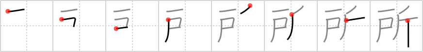

所
← →
place

Reading:
On-Yomi: ショ — Kun-Yomi: ところ、-ところ、どころ、とこ
Heisig story:
Door . . . ax.
Koohii stories:
1) [dihutenosa] 11-9-2007(149): You outsiders better learn your place! An axe stuck in the door when you get home is a pretty good indicator that this might not be the best place for you.
2) [CharleyGarrett] 23-7-2007(94): A place for everything and everything in its place. To the right of the door is the standard place for the axe.
3) [SammyB] 5-10-2008(57): When you come over to my place, you leave your axe at the door!
4) [HerrPetersen] 9-5-2007(41): Platz - The "Shining" (Jack Nicholson hacks the door with an ax) is not a nice place to be.
5) [saxman_52] 10-6-2009(23): Heeeeeeere's Johnny! Jack Nicholson breaks down a door with his ax in order to get to his wife's hiding place.